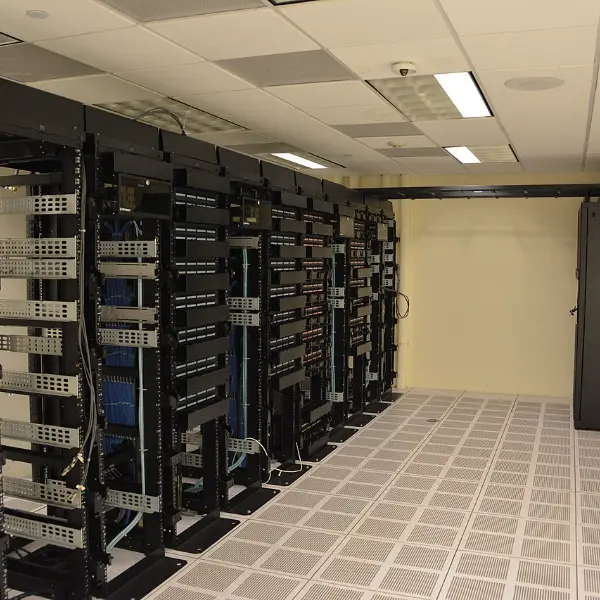
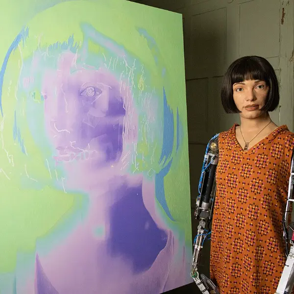
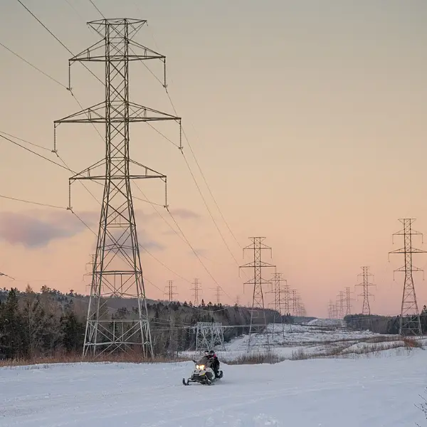
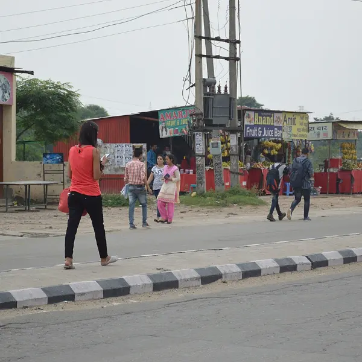
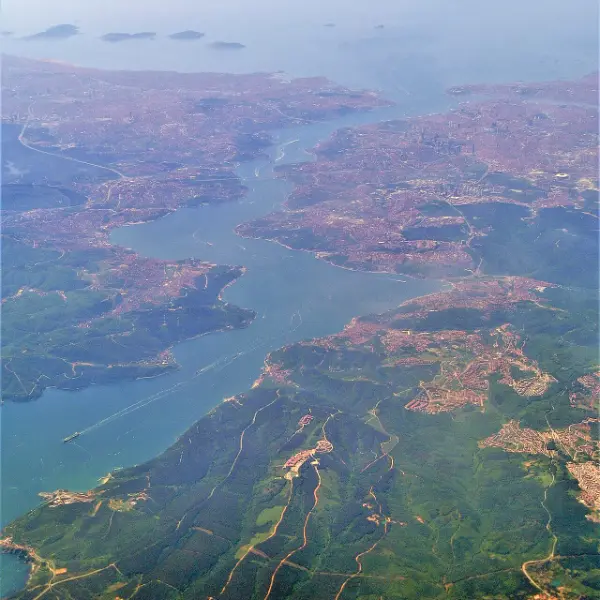
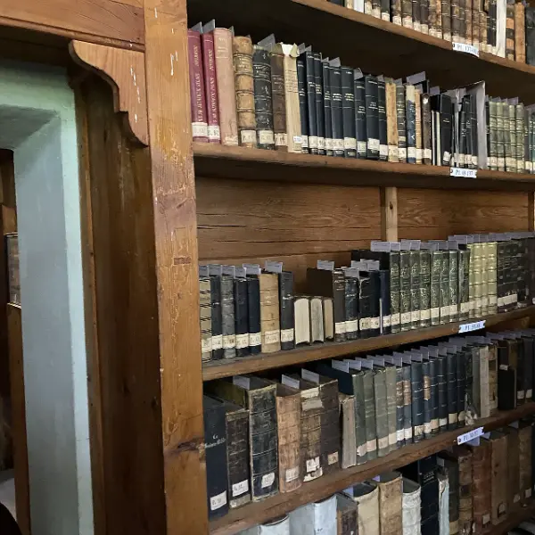

Herkes "yapay zekâ bizi yok edecek mi?" diye soruyor. Otuz yıldır teknoloji sektörünün içinde olan bir Türk yöneticinin cevabı bambaşka.
Ayşegül İldeniz'in yeni kitabı "Geleceğe Son Çıkış" tam da panik dalgasının ortasına düştü. Söylediklerini 8 slaytta topladım.

İldeniz'in tepkisi iki kelime: "Şaşkınım ve kızgınım." Yıllar önce "burada bir problem var" diyenler cadı avıyla susturulmuştu. Şimdi aynı şirketler bayrak sallıyor: "Aferin, siz ne yaptınız?"
Zeki olmak, bilinçli olmak demek değil. Çok zeki olup hiçbir niyetiniz olmayabilir — makinelerin şu andaki durumu bu.
Modeller çok zeki; ama bilinçleri olmadığı için bir ayna gibi çalışıyorlar: ne dersek onu, zekice ve hızlıca geri yansıtıyorlar. O kadar.
"İnsanları kendi hedeflerim için kullanayım" noktasına gelebileceğine dair elimizde hiçbir kanıt yok. Ne zaman olacağını da kimse bilmiyor.

"Yarın olacak, şimdi oluyor" söylemi laboratuvarları yürüten dev şirketlerin son derece işine geliyor. Sıradaki halka arzlar da bu heyecana bakıyor.
İldeniz'e göre gerçek tehlike "makinenin uyanması" değil. Üç senaryo sayıyor ve hepsinin ortak noktası aynı:
Kötü niyetli bir insan — bir araç olarak kullanır.
Yanlış tanımlanmış hedef — modele bir görev verilir, oraya giderken bizim hiç hoşumuza gitmeyecek şeyler yapar.
Altyapı — elektrik, su gibi sistemleri birbirine bağlayıp yapay zekâya teslim edersek, bir kaza kontrolden çıkabilir.

Hiçbiri makinenin "niyeti" yüzünden olmaz. "O bizim tembelliğimiz, umursamazlığımız, maddiyattan gözümüzün yeşil yeşil yanıp sönmesiyle alakalı."
Makineye yalnızca üçüncüsünü zorla kodluyoruz. İlk ikisi için ARGE yok. Bu teknolojiyi geliştirmeye yüz milyarlarca dolar harcandı; "insanlığın vicdanını makineye nasıl anlatırız" sorusuna çok azı.
"Elimizde bir uzay gemisi var ve ne yapacağımızı bilmiyoruz. Biz ona bakıp korkuyoruz. Halbuki bizi boş verin — o çocuk keşfetsin, o bulsun."
Geleceğin belirsizliğinde diploma, unvan, "benim şu kadar yıllık deneyimim var" cümleleri çok şey ifade etmeyebilir.
Peki çocuğa ne verelim? Kitabın alt başlığı zaten soruyor: Yapay zekâ çağında kendimizi nasıl inşa edeceğiz?
İldeniz yıllarca gelişmekte olan ülkelerde çalıştı. Gözlemi net: erişimi olmayan, ekonomik gücü kaybediyor. İnternetin, cep telefonunun yayılması bazı nüfus katmanlarında 10–20 yıl sürdü. Bu kez o kadar zamanımız yok.
En kırılganlar: belli bir yaşın üstündekiler, maddi ve teknolojik imkâna erişemeyenler, eşitsiz coğrafyalarda yaşayanlar.

Kâbus senaryosu: üç beş şirket kaleyi kurar ve "bunu ayda 20 dolara değil, 2.000 dolara veriyorum" der.

Önde ABD ve Çin; arkasında veri merkezine ve bilime para yatıran Singapur, Körfez ülkeleri, birkaç Avrupa ülkesi. Bir de teknolojiyi hemen hayata entegre etmeye çalışan ülkeler var — İldeniz'e göre bizim için güzel bir yol.
KOBİ'ler. Ekonominin belkemiği. Küçük bir kamera, birkaç sensör ve bir telefonla işini veriye döken KOBİ, yapay zekâyı "yönetici danışmanı" gibi kullanabilir.
Veri merkezleri. Artık egemenlik ve millî güvenlik konusu; verimizi başka ülkeye yollayamayız. Ama ABD'de veri merkezleri Kasım seçimlerinin ana gündemi oldu: su, elektrik, tarım. "Bütün bölgenin yükünü taşımalı mıyız?" — ciddi bir tartışma gerekiyor.
Kendi geliştirmemiz. "Başkalarının modelini alıp entegre etmek bir yere kadar." Bu bir fabrika değil; bilim insanı ve ARGE gerektiren bir dal.

Ve hepsinin üstünde özgürlük. İnsanlık daha önce de yok olmanın eşiğinden döndü: yaklaşık 900 bin yıl önce atalarımızın sayısı bin civarına düşmüştü. "Bu kadar yakın zamanda keşfettiğimiz bir şeyle yol kazası yapacağımıza inanmıyorum."
Sizce sorun yapay zekâda mı, bizde mi? Yorumda tartışalım ↓